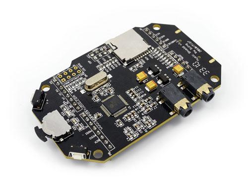
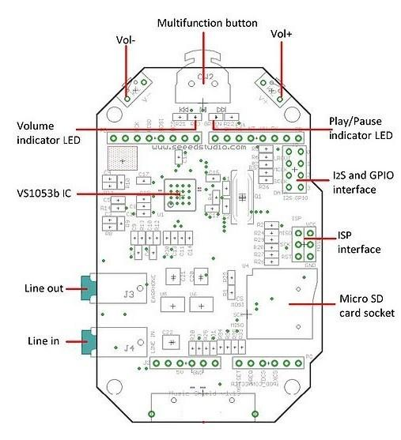
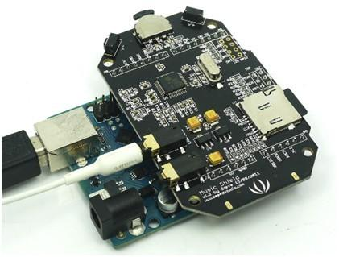

The Music Shield is a professional audio codec.It can work with Arduino, Seeeduino, Seeeduino Mega and Arduino Mega. It is based on VS1053b IC, and can play a variety of music formats stored on MicroSD cards with Seeed the provided Arduino Library.
Note:Recording is only supported on Seeeduino Mega and Arduino Mega for now.

| Item | Min | Typical | Max | Unit |
|---|---|---|---|---|
| Voltage | 4.5 | 5 | 5.5 | VDC |
| Current | / | / | 70 | mA |
| Output S/N Ratio (With A-Weighting) | / | 60 | / | dB |
| Channel Isolation (With A-Weighting) | / | 50 | / | dB |
| Frequency Response | -1 | / | 1 | dB |
| Signal Distortion | / | / | 0.5% | / |
| Maximum output(each channel with 16 ohm load) | 500 | / | / | mV |
| Audio Interface | 3.5mm Audio Jack | / | ||
| Supporting Format | MP3, WAV, MIDI, Ogg | / | ||
| Supported SD Card | Micro SD Card | / | ||
| ESD contact discharge | ±4 | KV | ||
| ESD air discharge | ±8 | / | ||
| Dimension | 80.4x52.5x13.9 | mm | ||
| Net Weight | 11±2 | g | ||

Multifunction button: Turn left to play previous song, and right to next song, while pressing it down to pause and resume.
Volume indicator LED (RED): If volume+, the red LED will be brighter.
Play/Pause indicator LED (GREEN): If playing, the green LED blinks.
Line out can drive 16 ohm or 32 ohm earphone.
Line in is used to record audio from other resources.
Micro SD card can be FAT16 or FAT32, and the size more than 2GB is not supported. (PLEASE NOTE: Example code included with library will only use FAT16 formatted cards)
I2S and GPIO are for digital audio output.
ISP interface is kept for bringing SPI port when using with Mega.
D0 - Unused.
D1 - Unused.
D2 - Used for receiving signal from iPod dock(could be used for your own application if iPod dock is not used).
D3 - Used for receiving signal from button for Volume Up(could be used for your own application if the switch is not used).
D4 - Used for receiving signal from switch for Next Song function(could be used for your own application if the switch is not used).
D5 - Used for receive signal from switch for Play&Stop and Record function(could be used for your own application if the switch is not used).
D6 - Used for receive signal from switch for Previous Song function(could be used for your own application if the switch is not used).
D7 - Used for receiving signal from button for Volume Down(could be used for your own application if the switch is not used).
D8 - Used for Green Led instructions(could be used for your own application if the switch is not used).
D9 - Used for Red Led instructions(could be used for your own application if the switch is not used).
D10 - Used for SPI Chip Select.
D11 - Used for SPI MOSI.
D12 - Used for SPI MISO.
D13 - Used for SPI SCK.
D14(A0) - Used for Reset of VS1053.
D15(A1) - Used for Data Require of VS1053.
D16(A2) - Used for Data Select of VS1053.
D17(A3) - Used for Chip Select of VS1053.
D18(A4) - Unused.
D19(A5) - Unused.
Insert the Micro SD card and the earphone; Plug the Music Shield onto the Arduino/Seeeduino; Connect the board to PC using USB cable. 
Play music:
Record music:(Only support ATmega1280 and ATmega2560 based board)
For Arduino 1.0:
Attention Please:The library of Fat16 between demo-1 and demo-2 is different,so please confirm that you download a corresponding library when using the two demos.And the two libraries can not existed together,so delete a one before using the other.
This demo will use the SD library coming with Arduino 1.0.
This demo will use an open source library Music_Shield_Demo_2_Library. There are two sketches in this demo: Using MusicPlayRandomly sketch, you can make the music play randomly.And using MusicPlayWithName, you can specify which song to be played by name.(Note: The demo can't co-exist with demo 1 in the libraries)
Note: About the specific methods of some functions in the library, You can reference the sofeware installation of the Music Shield V2.0.